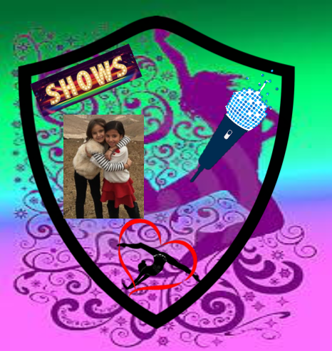

Para realizar el escudo de Analy, escogí un fondo colorido, pues siento que así es ella: llena de vida y color. Una niña que le encanta el baile y se mueve al ritmo todo el día, además de realizar rondadas por cada paso que da, y esto lo hace porque le encanta practicar gimnasia, su disciplina deportiva favorita. Podrán notar el cartel que dice show y esto es porque Analy está todo el día montando espectáculos para entretener a sus familiares, siempre provista del micrófono, que sin él no da gracia cantar y actuar. Ahora bien hay que entender que Analy no realiza estas actividades, si su prima Olga no las hace con ella. Olga es su persona favorita en este mundo. Con ella comparte y realiza todas las actividades descritas antes. |